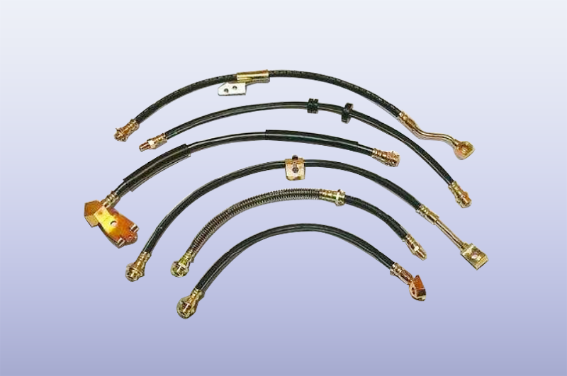
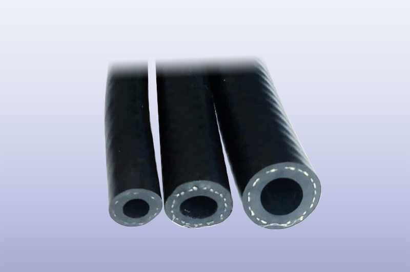
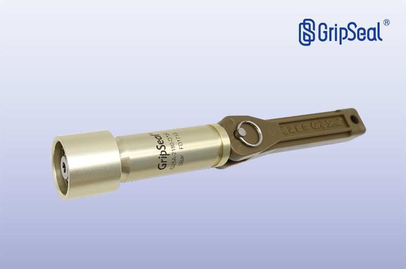
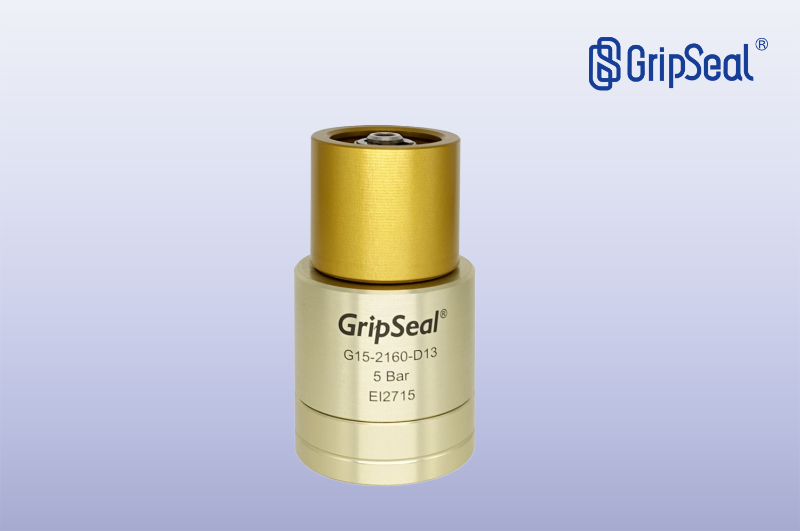
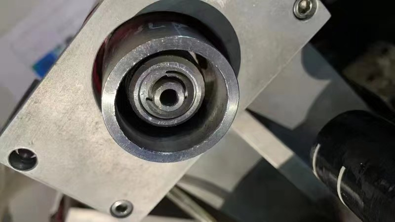

为什么软管比硬管难密封
Challenge
汽车整机与零部件中有大量管路负责导通冷却液、油等介质，出厂前同样需要做泄漏检测。软管类工件与金属硬管的关键差别，在于测漏装夹过程中会产生非常大的形变。
一旦产生形变，普通的快速密封接头就夹不住，导致密封失效或测试结果不稳定。因此软管测试不能沿用硬管的夹持思路，需要针对变形做专门设计。
限位套盒：先解决软管的变形
Solution

针对低压软管的变形问题，可在内圈密封的基础上增加限位套盒：由外部硬结构限制软管在装夹时的径向形变，让内部密封圈仍能贴合管壁形成稳定密封。
这是软管测漏与硬管测漏在连接方案上的核心区别——先控制形变，再谈夹持力与压力等级。
手动工位：G25A 加硬质外壳
Manual
在 G25A 外面套一个硬质外壳，即可作为手动操作的快速密封接头使用，用来测 3 公斤以内的普通低压管没有问题。
G25A 特点：手动操作，压力 3 bar 以内，适合绝大多数水路、油路。适合节拍要求不高、需要人工上下件的测试工位。
自动化工位：G15 气动密封
Pneumatic
G15 是气动密封接头，外面同样套一个硬质外壳后，即可用于自动化气动密封场合，对批量生产得心应手。
G15 特点：气动自动操作，压力 3 bar 以内，适合绝大多数水路、油路。手动与气动两条路线的选择，主要取决于工位是否需要自动上下件与产线节拍。